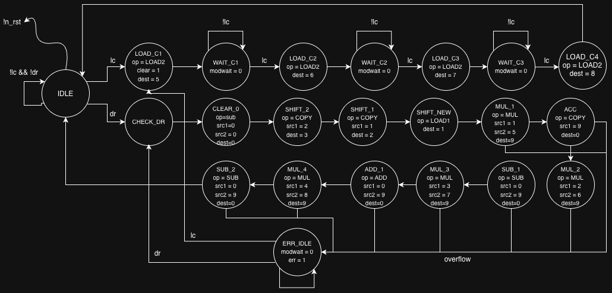
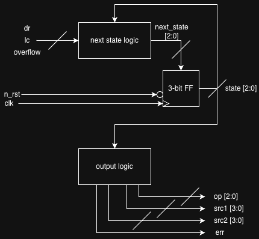
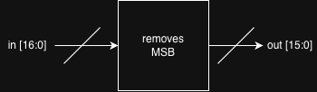

RTL Architecture & State Machines
Selected original diagrams from my ECE337 UART and 4-point controller labs, documenting the RTL block structure, controller state transitions, and timer logic.
Lab 5 — UART
These diagrams show the receiver-control-unit (RCU) state transitions and RTL organization, along with the timer logic used by the UART design.
RCU RTL Diagram

RCU State Transition

Timer RTL Diagram

Lab 6 — 4-Point Controller
The controller flowchart and RTL diagrams capture the control states, datapath operation sequence, and magnitude block interface.
Controller Flowchart

Controller RTL Diagram

Magnitude RTL Diagram
